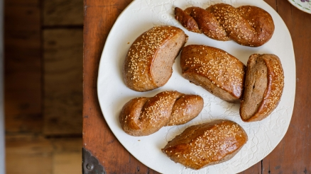

Mardin Kliçe Çöreği
Geçenlerde akşam midem kazında ve buzlukta ne var diye bir bakınca annemin yapıp bıraktığı Mardin çöreklerini buldum. Hemen tavada ısıtıp yanında sürülebilir çikolatayla yiyince ne kadar özlediğimi hatırladım. Bu vesileyle bu hafta mis gibi Mardin çöreği yaptım. Bol mahlepli, tarçınlı, tatlı bu çörek eminim bu soğuklarda sizin de içinizi ısıtacak.
Malzemeler
- 6 su bardağı, 650 gr beyaz un
- 1,5 su bardağı süt
- 1 su bardağı su
- 1 su bardağı, 180 gr, toz şeker
- 150 gr tereyağı
- 1 paket instant maya
- 2 çorba kaşığı toz tarçın
- 1 çorba kaşığı tane mahlep
- 1 tatlı kaşığı yenibahar
- 1 dolu çay kaşığı karabiber
- 1 tutam tuz
- 1 yumurta
- Susam
Hazırlanışı
- Ufak bir sürahiye 1 su bardağı kaynar su, 1,5 su bardağı soğuk süt, 1 paket instant maya ve 1 su bardağı toz şekeri koyup karıştırın. Maya coşup iyice köpürene kadar 5-10 dakika kenarda bekletin.
- Bu sırada küçük bir tencerede 150 gr tereyağını eritin. Geniş bir kaseye 6 bardak, 650 gr, beyaz un koyun. Üzerine 1 tatlı kaşığı yenibahar, 2 çorba kaşığı toz tarçın, 1 tutam tuz, 1 dolu çay kaşığı karabiber ekleyin. 1 çorba kaşığı tane mahlebi havanda iyice dövüp toz haline getirin ve kuru karışıma ekleyin. Eğer toz mahlep kullanıyorsanız, kuvveti az olacağından 1,5 hatta 2 çorba kaşığı da ekleyebilirsiniz.
- Tüm kuru malzemeleri karıştırdıktan sonra üzerine erimiş tereyağını ve mayalı şekerli karışımı ekleyin. Ardından bir elinizle yoğurmaya başlayın. Hamur biraz yapışkan ve yumuşak bir hamur olmalı. Tüm malzemeler iyice karışıncaya kadar yoğurun. Hamurun biraz cıvık olması normal, bekledikten sonra toparlayıp ele gelen bir hal alacaktır. Hamurun etrafını yapışmasın diye yağlayıp üzerini örtün ve oda sıcaklığında 1 saat, yaklaşık iki katına gelene kadar mayalayın.
- Ardından hamuru tezgaha alıp iki bezeye bölün. Eğer hamurunuz hala biraz yapışıyorsa tezgahı biraz yağlayabilirsiniz. Her bir bezeyi rulo şeklinde tezgahta açın. Yaklaşık 2 karış uzunluğunda, 4,5 parmak kalınlığında olması yeterli olacaktır. Bundan sonra hamurun bir kenarından başlayarak verev bir şekilde yaklaşık 3 parmak kalınlığında çörekler kesin. İki kenarı tam şeklinde olmadığı için onları alıp istediğiniz şekilde çörekler yapabilirsiniz. Ben kolay bir şekilde ördüm. Çörekleri pişirme kağıdı serilmiş fırın tepsisine dizin.
- Üzerlerine 1 yumurtayı iyice çırpıp sürün ve dilediğiniz kadar susam serpin. Bol susamlı denemenizi tavsiye ederim. 180 derecede altlı üstü ve fansız çalışan fırında 45-50 dakika pişirin. Eğer iki tepsiniz varsa 20-25 dakika sonra tepsilerin yerini mutlaka değiştirin ki eşit şekilde pişebilsinler. Fırından çıkan Mardin çöreklerinin üzerine bir de ,ablamın icadı olan yeme şekli, sürülebilir çikolata sürüp yerseniz değmeyin keyfinize.